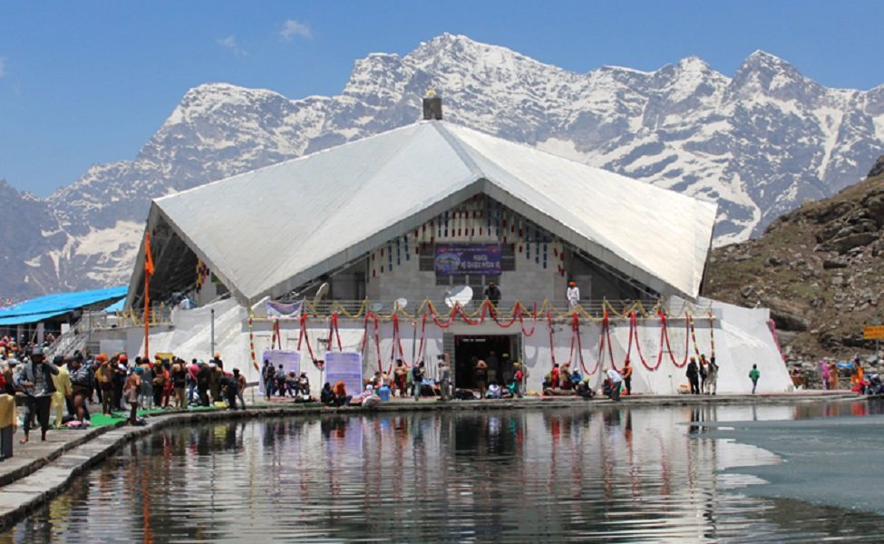
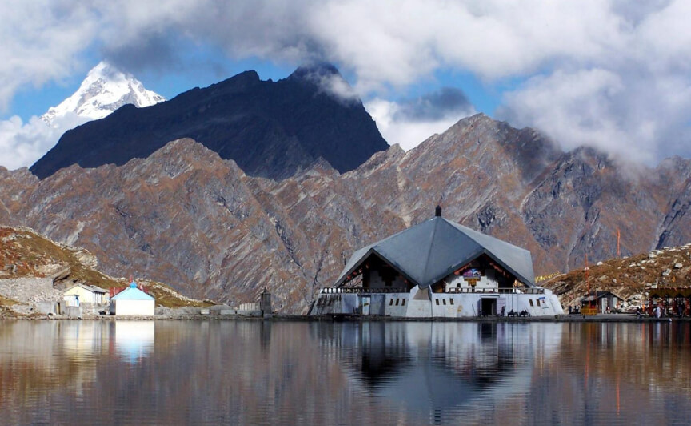
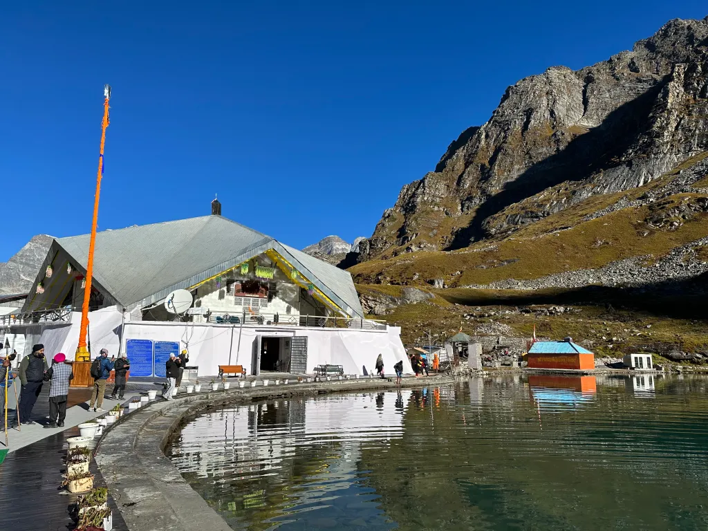
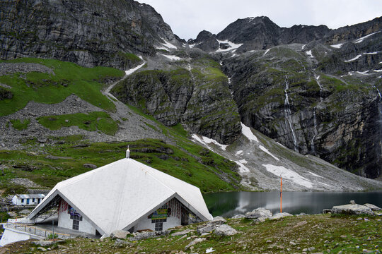
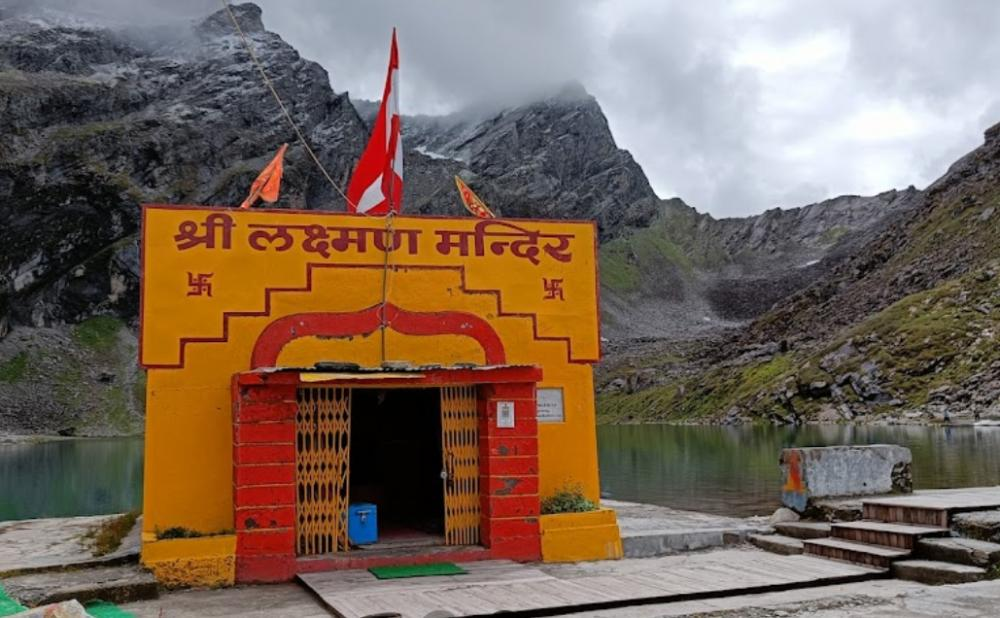

Hemkund Sahib (also known as Hemkunt Sahib or Gurudwara Shri Hemkund Sahib) is one of the holiest and most spiritually elevated pilgrimage sites for Sikhs worldwide, situated at an astonishing altitude of 4,632 meters in the Chamoli district of Uttarakhand. Perched beside a pristine glacial lake (Hemkund Lake) surrounded by seven snow-capped peaks, this sacred spot is believed to be the place where Guru Gobind Singh Ji, the tenth Sikh Guru, meditated in his previous birth as Dusht Daman — a tapasvi who performed severe penance here to attain union with the Divine. The gurudwara, built in the 1930s and expanded over time, stands as a symbol of unwavering faith, inner strength, and divine connection amid one of the most dramatic Himalayan landscapes on Earth.
The journey to Hemkund Sahib is a true test of devotion — involving a challenging 6 km trek (or pony ride) from Ghangaria (Govindghat base), steep stone steps, crisp mountain air, and breathtaking views of waterfalls, wildflowers, and glaciers. The crystal-clear lake is considered holy; pilgrims take a dip (despite freezing temperatures) for spiritual purification. Surrounded by the Valley of Flowers National Park nearby, the site radiates profound serenity, especially during the short open season when thousands undertake the arduous yatra to offer prayers, listen to kirtan, and experience the Guru's eternal presence. Hemkund Sahib is not just a destination — it's a transformative pilgrimage where body, mind, and soul converge in the lap of the Himalayas, reminding every visitor of the power of faith over hardship.
June to October (gurudwara opens around May end/June and closes by mid-October due to heavy snowfall). Peak season: July–September for stable weather, blooming rhododendrons/valley flowers, and clearer paths. Avoid early June (snow on trek) and late October (sudden blizzards/closures). Start trek very early (pre-dawn) for fewer crowds, better weather, and stunning sunrise views over the peaks and lake.
Gurudwara Shri Hemkund Sahib with Guru Granth Sahib darshan, holy glacial lake dip for purification, steep 6 km trek from Ghangaria with stunning waterfalls & views, nearby Valley of Flowers & Lakshman Temple, langar seva (free community kitchen), kirtan sessions, and panoramic seven-peak Himalayan vistas — perfect for spiritual reflection, photography, endurance pilgrimage, and experiencing Sikh devotion in extreme Himalayan beauty.
Acclimatize in Govindghat/Ghangaria (stay overnight), start trek by 4–5 AM, wear sturdy trekking shoes/layers (very cold even in summer), carry rain gear/poncho, take slow paced steps to avoid altitude sickness, respect gurudwara rules (cover head, remove shoes, no photography inside sanctum), accept langar gratefully, hire pony/porter if needed but prepare for the sacred effort, and plan return same day — no overnight stay at Hemkund due to extreme conditions.
"At Hemkund Sahib, where sky touches glacier and silence meets the Guru's eternal light, every labored step becomes a prayer, every breath a surrender — here, in the heart of the Himalayas, the soul finds not just altitude, but the highest truth: that true peace lies beyond the body, in the embrace of the One who waits beyond the peaks."